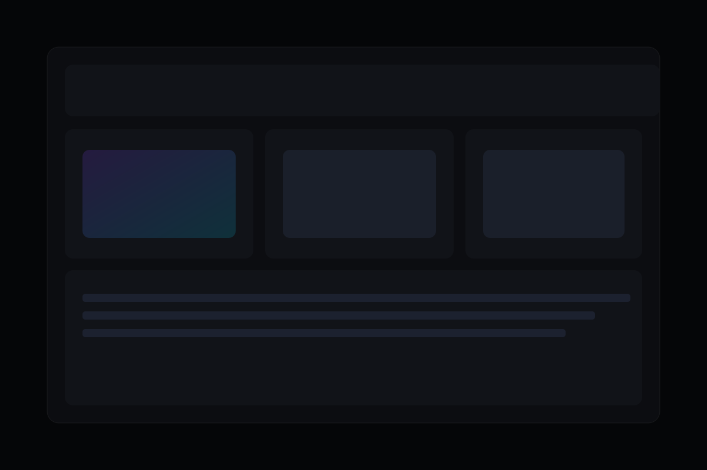

Quando aplicar
Quando o time tem dados, mas não tem visão integrada para agir com velocidade e confiança.

Painéis e Relatórios
Criamos painéis e relatórios com contexto de negócio para acompanhamento diário de metas, riscos e produtividade.
Quando o time tem dados, mas não tem visão integrada para agir com velocidade e confiança.
Menos tempo consolidando planilha e mais tempo atuando nos pontos críticos da operação.
Estruture seus indicadores com uma camada de leitura executiva e operacional no mesmo ambiente.